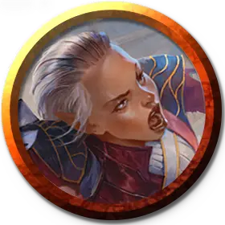

Маг клятвы с Призмари
Prismari Pledgemage
Маленький или Средний Гуманоид (Чародей), любое мировоззрение

Класс Доспеха 12 (15 с доспехами мага)
Хиты 66 (12к8 + 12)
Скорость 35 футов
| мод | спас | ||
|---|---|---|---|
| СИЛ | 10 | +0 | +0 |
| ЛОВ | 15 | +2 | +4 |
| ТЕЛ | 13 | +1 | +1 |
| мод | спас | ||
|---|---|---|---|
| ИНТ | 12 | +1 | +1 |
| МДР | 14 | +2 | +2 |
| ХАР | 17 | +3 | +5 |
Навыки Акробатика +4, Атлетика +4, Выступление +7
Чувства пассивное Восприятие 12
Языки Общий, и ещё два любых языка
Опасность 4 (1100 опыта)
Бонус мастерства +2
Особенности
Увёртливость. Если маг клятвы попадает под действие эффекта, который позволяет совершить спасбросок Ловкости, чтобы получить половину урона, маг клятвы не получает урона при успехе и половину урона при провале. Он не может использовать эту особенность, если становится недееспособным.
Действия
Мультиатака. Маг клятвы совершает две атаки Стихийным ударом.
Стихийный удар. . Рукопашная или дальнобойная атака заклинанием: +5 к попаданию, досягаемость 5 футов или дистанция 60 футов, одна цель. Попадание: 12 (3к6 + 2) урона огнём или холодом (по выбору мага клятвы).
Конец спектакля (1/день). Маг клятвы сияет магией стихий, нацеливаясь на одно существо, которое он может видеть в пределах 60 футов. Цель должна совершить спасбросок Мудрости Сл 13. При провале цель получает 28 (8к6) урона огнём или холодом (по выбору мага клятвы) и ошеломляется до начала следующего хода мага клятвы. При успехе цель получает половину этого урона и не ошеломляется.
Использование заклинаний. Маг клятвы накладывает одно из следующих заклинаний, используя Харизму в качестве базовой характеристики (Сл спасброска от заклинаний 13):
• Неограниченно: малая иллюзия [minor illusion];
• 2/день каждое: порыв ветра [gust of wind], безмолвный образ [silent image];
• 1/день каждое: доспехи мага [mage armor], хождение по воде [water walk].
Бонусные действия
Всплеск артистизма (Перезарядка 4-6). Маг клятвы перемещается на расстояние, не превышающее его скорость, окружая себя стихийной магией по мере движения. До конца своего хода маг клятвы может перемещаться в пространстве других существ. Впервые, когда маг клятвы входит в пространство существа в течении хода, это существо должно преуспеть в спасброске Ловкости Сл 13, иначе падает ничком. Если маг клятвы заканчивает свой ход в пространстве другого существа, маг клятвы получает 5 (1к10) урона силовым полем и выталкивается в ближайшее свободное пространство.
Описание
Студенты факультета Призмари — сначала как ученики, а затем как маги клятвы— не видят разницы между магией и искусством. Нет двух учеников Призмари, владеющих одинаковым стилем использования заклинаний; каждый владеет стихийной магией, преподаваемой факультетом, таким образом, чтобы выразить свою индивидуальность. В руках учеников Призмари заклинания, вызывающие огонь или подчиняющие себе воду, станут яркой и выразительной демонстрацией, наполненной творческой энергией.
Использование стихийных сил их магии требует точности и изящества, и некоторые ученики посвящают себя погоне за идеалом совершенного контроля, надеясь, что, поступая так, они смогут точно выразить то, что они представляют в своих головах.
Учёные призмари
Ученые факультета Призмари считают, что искусство - это самая настоящая форма магии. Они используют магию, чтобы создавать великолепные произведения искусства, и они используют артистизм, чтобы сделать свою магию впечатляющей.